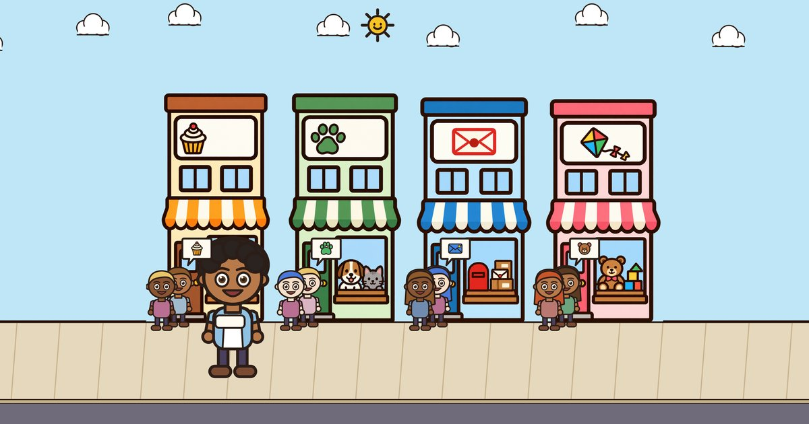

Figure Street
A math word-problem game for grades 2 and 3, by Bruin Labs LLC.

 iPhone. Free to try.
iPhone. Free to try.
What it is
Your child runs a street of small shops. Every customer's order is a math word problem. Your child reads the order (or has it read aloud), sets out the numbers in a picture of the problem, and types the answer. There is no multiple choice. Wrong answers cost nothing; the customer gives a hint.
The pictures are the ones research says work best for word problems: decide what kind of problem it is (putting together, adding to or taking from, comparing, or equal groups), draw it, then solve. Earlier kinds come back now and then so they stick.
Made for kids, trusted by grown-ups. Works offline. No ads, no accounts, no chat, and no coins for sale. No loot boxes and no streaks. Shop days end on their own after 15 minutes (you can change it). A skill report for grown-ups shows how each kind of problem is going and whether it is remembered weeks later.
Free to try, one purchase
The first level (Helper) and the first two shops are free. One purchase, made by a grown-up behind a question only a grown-up can answer, opens the next two levels and two more shops to build. There is no subscription, and it works for your whole family with Family Sharing.
For teachers and homeschool families
Four pictures for word problems (PDF, two pages): the four pictures with a worked example each, eight problems to draw and solve, and an answer key. Free to print and share with your class.
Support
Need help? Email contact@bruinlabsllc.com. A grown-up should write; we answer within a few days.
How do I restore the purchase on a new device? Open Grown-ups (bottom left of the street), answer the question, then Settings and Restore Purchases. Use the same Apple Account that made the purchase.
Where is my child's progress? On the device only. Deleting the app deletes the progress; we keep no copy.
Nothing is read aloud. The game reads orders and hints in its own recorded voice, built into the app, so there is nothing to download. Check that the ring/silent switch is not on silent, that the volume is up, and that Read-aloud is on in Grown-ups, Settings.
How is my child doing? Grown-ups, then Skill report: how often each kind of problem is solved without hints, and whether it is remembered weeks later.
Can I start my child at a higher level? Grown-ups, then Settings, then Starting level.